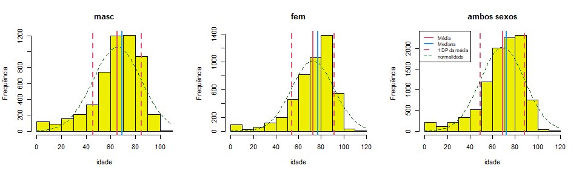

Funções para aulas e apresentação de resultados em português.
O pacote contém funções com outputs em português e bancos de dados úteis para a produção de gráficos e tabelas para aulas, como a descrição “completa” de uma variável numérica, uma tabela de frequências, a análise de uma tabela 2 x 2 ou a construção de indicadores de saúde, como a curva de Nelson de Moraes. Veja a ajuda para a lista completa e detalhamento das funções e bancos de dados no pacote.
Instalação
O pacote ainda não tem uma primeira versão para ser lançada. A versão de desenvolvimento pode ser instalada a partir do GitHub com o pacote remotes:
Exemplos
Descrição univariada
Funções
descreve,histoboxetabuleiro.
descreve(x, by = NULL, dec = 2, na.rm = TRUE, data = NULL, histograma = TRUE, breaks = "Sturges", freq = TRUE, main = NULL, xlab = NULL, ylab = NULL, linhas = 2, curva = TRUE, densidade = FALSE, col.dens = 1, col = "yellow2", col.curva = "DarkGreen", col.media = 2, col.dp = col.media, col.mediana = 4, legenda = TRUE, lugar = "topright", lty.curva = 2, lwd.curva = 1, lty.dens = 3, lwd.dens = 2, lty = NULL, lwd = NULL, cex = NULL, print = "output", soma = FALSE, ...)Variáveis numéricas
A função descreve realiza a descrição “completa” de uma variável numérica. Por padrão apresenta uma lista com os parâmetros descritos e um histograma com marcas da distribuição da variável. O histograma pode ser suprimido e a lista pode ser transformada em data.frame.

varnum <- rnorm(1000) : 1000 observações
Válidos: 1000 Missings: 0
Menor: -3.01 Maior: 3.81 Amplitude: 6.82
Média: -0.01 DP: 1.03 CV(%): 8884.81
Assimetria: -0.02 Curtose(real): 2.99
Quantis:
2.5% 5% 25% 50% 75% 95% 97.5%
-2.13 -1.73 -0.70 -0.04 0.69 1.74 2.01
IIQ: 1.39
descreve(varnum, histograma = FALSE, print = "tabela")
varnum
n 1000.00
Válidos 1000.00
Missings 0.00
Menor -3.01
Maior 3.81
Amplitude 6.82
Média -0.01
Variância 1.07
DP 1.03
CV(%) 8884.81
Assimetria -0.02
Curtose 2.99
P2.5 -2.13
P5 -1.73
P25 -0.70
P50 -0.04
P75 0.69
P95 1.74
P97.5 2.01
IIQ 1.39O output pode ser guardado em um objeto e depois impresso como lista ou como tabela (de classe data.frame) e usado para captar em texto cada parâmetro isoladamente.
x <- descreve(varnum, histograma = FALSE, print = FALSE)
Rcoisas:::print.descreve(x)
varnum : 1000 observações
Válidos: 1000 Missings: 0
Menor: -3.01 Maior: 3.81 Amplitude: 6.82
Média: -0.01 DP: 1.03 CV(%): 8884.81
Assimetria: -0.02 Curtose(real): 2.99
Quantis:
2.5% 5% 25% 50% 75% 95% 97.5%
-2.13 -1.73 -0.70 -0.04 0.69 1.74 2.01
IIQ: 1.39
Rcoisas:::print.descreve(x, print = "tabela")
varnum
n 1000.00
Válidos 1000.00
Missings 0.00
Menor -3.01
Maior 3.81
Amplitude 6.82
Média -0.01
Variância 1.07
DP 1.03
CV(%) 8884.81
Assimetria -0.02
Curtose 2.99
P2.5 -2.13
P5 -1.73
P25 -0.70
P50 -0.04
P75 0.69
P95 1.74
P97.5 2.01
IIQ 1.39
paste("Média de", x$media, "e desvio-padrão de", x$dp, "unidades, configurando um coeficiente de variação de", x$cv, "%.")
[1] "Média de -0.01 e desvio-padrão de 1.03 unidades, configurando um coeficiente de variação de 8884.81 %."O objeto pode ser modificado para sua impressão. O exemplo a seguir usa outra função do pacote, formatL(), para apresentar os valores em formato latino.
Rcoisas:::print.descreve(x, print = "tabela") |>
tibble::as_tibble(rownames = "parametro") |>
dplyr::mutate(varnum = formatL(varnum, format = "fg", digits = 3)) |>
knitr::kable(align = 'r')| parametro | varnum |
|---|---|
| n | 1.000 |
| Válidos | 1.000 |
| Missings | 0 |
| Menor | -3,01 |
| Maior | 3,81 |
| Amplitude | 6,82 |
| Média | -0,01 |
| Variância | 1,07 |
| DP | 1,03 |
| CV(%) | 8.885 |
| Assimetria | -0,02 |
| Curtose | 2,99 |
| P2.5 | -2,13 |
| P5 | -1,73 |
| P25 | -0,7 |
| P50 | -0,04 |
| P75 | 0,69 |
| P95 | 1,74 |
| P97.5 | 2,01 |
| IIQ | 1,39 |
O formato em tabela √© pensado para uma análise estratificada por categorias de um fator. Um argumento by está em desenvolvimento e ainda não funciona adequadamente. üòï A alternativa √© juntar ‚Äúmanualmente‚Äù a descri√ß√£o de cada estrato:
par(mfrow = c(1,3))
cbind(
descreve(idade, data = obitosRS2019[obitosRS2019$sexo == "masc", ], main = "masc", legenda = FALSE, print = 'tabela'),
descreve(idade, data = obitosRS2019[obitosRS2019$sexo == "fem", ], main = "fem", legenda = FALSE, print = 'tabela'),
descreve(idade, data = obitosRS2019, main = "ambos sexos", print = 'tabela', lugar = 'topleft')
) |>
dplyr::rename("Masculino" = 1, "Feminino" = 2, "Ambos sexos" = 3) |>
dplyr::mutate(Masculino = formatL(Masculino, format = "fg", digits = 4),
Feminino = formatL(Feminino, format = "fg", digits = 4),
"Ambos sexos" = formatL(`Ambos sexos`, format = "fg", digits = 4)) |>
knitr::kable(align = 'r') 
| Masculino | Feminino | Ambos sexos | |
|---|---|---|---|
| n | 5.355 | 4.646 | 10.000 |
| Válidos | 5.348 | 4.645 | 9.993 |
| Missings | 7 | 1 | 7 |
| % missings | 0,13 | 0,02 | 0,07 |
| Menor | 0 | 0 | 0 |
| Maior | 103 | 108 | 108 |
| Amplitude | 103 | 108 | 108 |
| Média | 65,41 | 71,94 | 68,44 |
| Variância | 382,5 | 382,9 | 393,3 |
| DP | 19,56 | 19,57 | 19,83 |
| CV(%) | 29,9 | 27,2 | 28,98 |
| Assimetria | -1,11 | -1,47 | -1,23 |
| Curtose | 4,24 | 5,73 | 4,71 |
| P2.5 | 17 | 15 | 16,8 |
| P5 | 24 | 35 | 27 |
| P25 | 57 | 63 | 59 |
| P50 | 69 | 76 | 72 |
| P75 | 79 | 86 | 83 |
| P95 | 90 | 94 | 93 |
| P97.5 | 93 | 97 | 95 |
| IIQ | 22 | 23 | 24 |
A função histobox desenha um histograma com um diagrama de caixas (“box-plot”) horizontal acima do gráfico.
histobox(varnum, col.h = "tomato", col.bx = "yellow", xlab = "Medida", ylab = "Frequência")Variáveis categóricas
As funções tabuleiro e tabuleiro2 apresentam uma tabela univariada com frequências absolutas e relativas (%) simples e acumuladas.
tabuleiro(x, digits = 1, total = TRUE, cum = TRUE, format = "en", data = NULL, ...)
tabuleiro2(varcat, digits = 1)tabuleiro(RACACOR, data = obitosRS2019)
Freq % Freq.acum %acum
Amarela 15 0.2 15 0.2
Branca 8517 88.0 8532 88.2
Indígena 17 0.2 8549 88.4
Parda 570 5.9 9119 94.3
Preta 554 5.7 9673 100.0
Total 9673 100.0 9673 100.0Uma tabela para apresentação pode ser feita com a função kable{knitr}. Esta função tem argumentos para apresentar resultados em formato latino, mas o trabalho pode ser abreviado com a função formatL{Rcoisas} – enquanto o argumento format não é implementado. Além disso, a frequência acumulada aqui não faz muito sentido.
tab1 <- tabuleiro(RACACOR, data = obitosRS2019, cum = FALSE, digits = 3)
knitr::kable(tab1 |> formatL(format = "fg"), align = 'r')| Freq | % | |
|---|---|---|
| Amarela | 15 | 0,2 |
| Branca | 8.517 | 88 |
| Indígena | 17 | 0,2 |
| Parda | 570 | 6 |
| Preta | 554 | 6 |
| Total | 10.000 | 100 |
A função foi criada para oferecer axs estudantes um modo fácil de criar no R uma tabela com essas características e valores em formato latino. Na sua primeira versão os valores eram pré-formatados, oferecendo a seguinte tabela:
(tab2 <- tabuleiro2(obitosRS2019$RACACOR))
Freq %(+NA) % válido % acum
Amarela " 15" "0,1" "0,2" "0,2"
Branca " 8.517" "85,2" "88,0" "88,2"
Indígena " 17" "0,2" "0,2" "88,4"
Parda " 570" "5,7" "5,9" "94,3"
Preta " 554" "5,5" "5,7" "100"
Total válidos " 9.673" "96,7" "100" "˗"
Missing " 327" "3,3" "˗" "˗"
Total "10.000" "100" "˗" "˗" que facilmente pode ser formatada com kable.
knitr::kable(tab2, align = 'r')| Freq | %(+NA) | % válido | % acum | |
|---|---|---|---|---|
| Amarela | 15 | 0,1 | 0,2 | 0,2 |
| Branca | 8.517 | 85,2 | 88,0 | 88,2 |
| Indígena | 17 | 0,2 | 0,2 | 88,4 |
| Parda | 570 | 5,7 | 5,9 | 94,3 |
| Preta | 554 | 5,5 | 5,7 | 100 |
| Total válidos | 9.673 | 96,7 | 100 | ˗ |
| Missing | 327 | 3,3 | ˗ | ˗ |
| Total | 10.000 | 100 | ˗ | ˗ |
Mas os valores da tabela estão em formato caractere e não num√©rico, o que impede a execu√ß√£o de opera√ß√µes matemáticas. Por isso foi rebatizada de tabuleiro2 e seu desenvolvimento descontinuado. Está no pacote porque ainda a tenho em várias aulas üò™. √â desaconselhável seu uso em novos scripts.
Curva de Nelson de Moraes
A função fxetarNM agrega um vetor com a idade ou com a “faixa etária detalhada” (classificação do DATASUS) segundo as categorias da Curva de Nelson de Moraes (< 1, 1-4, 5-19, 20-49, 50 e +). O argumento grafico = TRUE desenha o gráfico da curva.
fxetarNM(obitosRS2019$idade, grafico = TRUE,
col.sub = 2, font.sub = 3, cex.sub = .8,
main = "Curva de Nelson de Moraes. RS, 2019.",
sub = "\nAmostra aleatória de 10.000 óbitos.") 
Neste caso interessam as frequências acumuladas:
obitosRS2019$idade |>
fxetarNM() |>
tabuleiro(total = FALSE) |>
formatL(format = "fg", digits = 2) |>
knitr::kable(align = 'r')| Freq | % | Freq.acum | %acum | |
|---|---|---|---|---|
| < 1 | 156 | 1,6 | 156 | 1,6 |
| 1-4 | 29 | 0,3 | 185 | 1,9 |
| 5-19 | 130 | 1,3 | 315 | 3,2 |
| 20-49 | 1.090 | 11 | 1.405 | 14 |
| 50 e + | 8.588 | 86 | 10.000 | 100 |
Tabelas 2 x 2
A função bolero analisa a tabela de contingências de duas variáveis dicotômicas. O exemplo a seguir usa um banco de dados do pacote Rcoisas, com uma amostra aleatória de dez mil registros de óbitos do RS para comparar a probabilidade de um diagnóstico de causa cardiovascular e de causa externa segundo o sexo, entre os óbitos. As causas são classificadas com a função cid10cap(), do pacote csapAIH.
obitos <- obitosRS2019[c("sexo", "idade", "RACACOR", "CAUSABAS")]
cardio <- grepl("circulatório", csapAIH::cid10cap(obitos$CAUSABAS)) |>
factor(levels = c(TRUE, FALSE), labels = c("sim", "não"))
externas <- grepl("externas", csapAIH::cid10cap(obitos$CAUSABAS)) |>
factor(levels = c(TRUE, FALSE), labels = c("sim", "não"))
tabolero <- bolero(obitos$sexo, cardio)
===============================================================
Tabela 2 por 2
bolero(independente, dependente, dec=2, dnn)
---------------------------------------------------------------
Var. dependente : cardio = sim
Var. independente: obitos.sexo = fem
Missings: 1 (0,0%)
cardio
obitos$sexo sim não Sum
fem 1197 3448 4645
masc 1259 4095 5354
Sum 2456 7543 9999
Proporções (%)
cardio
obitos$sexo sim não
fem 25.8 74.2
masc 23.5 76.5
Razão de Probabilidades: 1.10 ; IC95% (assintótico): 1.02 1.17
IC95% (exato) : 1.02 1.17
Razão de Odds : 1.13 ; IC95% (exato) : 1.03 1.24
Valor-p: Pearson, Yates: 0.01 ; Fisher: 0.009
===============================================================Para mudar a categoria de referência mudam-se antes os níveis da variável. Os rótulos dos nomes das variáveis podem ser modificados com o argumento dnn.
bolero(factor(obitos$sexo, levels = c("masc", "fem")), externas,
dnn = c("sexo", "causas externas"))
===============================================================
Tabela 2 por 2
bolero(independente, dependente, dec=2, dnn)
---------------------------------------------------------------
Var. dependente : causas.externas = sim
Var. independente: sexo = masc
Missings: 1 (0,0%)
causas externas
sexo sim não Sum
masc 683 4671 5354
fem 206 4439 4645
Sum 889 9110 9999
Proporções (%)
causas externas
sexo sim não
masc 12.8 87.2
fem 4.4 95.6
Razão de Probabilidades: 2.88 ; IC95% (assintótico): 2.47 3.34
IC95% (exato) : 2.49 3.32
Razão de Odds : 3.15 ; IC95% (exato) : 2.68 3.72
Valor-p: Pearson, Yates: <0,001 ; Fisher: <0,001
===============================================================bolero foi escrita há mais de 20 anos e não pode ser impressa com kable, mas os elementos de seu output podem ser recuperados. Veja a estrutura de seu resultado:
# Note que acima foi criado o objeto 'tabolero'
str(tabolero)
List of 14
$ tab : 'table' int [1:2, 1:2] 1197 1259 3448 4095
..- attr(*, "dimnames")=List of 2
.. ..$ obitos$sexo: chr [1:2] "fem" "masc"
.. ..$ cardio : chr [1:2] "sim" "não"
$ proptab : 'table' num [1:2, 1:2] 25.8 23.5 74.2 76.5
..- attr(*, "dimnames")=List of 2
.. ..$ obitos$sexo: chr [1:2] "fem" "masc"
.. ..$ cardio : chr [1:2] "sim" "não"
$ RP : num 1.1
$ lci.rp : num 1.02
$ uci.rp : num 1.17
$ OR : num 1.13
$ or.ic : num [1:2] 1.03 1.24
..- attr(*, "conf.level")= num 0.95
$ lci.or : num 1.03
$ uci.or : num 1.24
$ ft :List of 7
..$ p.value : num 0.0091
..$ conf.int : num [1:2] 1.03 1.24
.. ..- attr(*, "conf.level")= num 0.95
..$ estimate : Named num 1.13
.. ..- attr(*, "names")= chr "odds ratio"
..$ null.value : Named num 1
.. ..- attr(*, "names")= chr "odds ratio"
..$ alternative: chr "two.sided"
..$ method : chr "Fisher's Exact Test for Count Data"
..$ data.name : chr "tab"
..- attr(*, "class")= chr "htest"
$ qui2 :List of 9
..$ statistic: Named num 6.7
.. ..- attr(*, "names")= chr "X-squared"
..$ parameter: Named int 1
.. ..- attr(*, "names")= chr "df"
..$ p.value : num 0.00963
..$ method : chr "Pearson's Chi-squared test with Yates' continuity correction"
..$ data.name: chr "tab"
..$ observed : 'table' int [1:2, 1:2] 1197 1259 3448 4095
.. ..- attr(*, "dimnames")=List of 2
.. .. ..$ obitos$sexo: chr [1:2] "fem" "masc"
.. .. ..$ cardio : chr [1:2] "sim" "não"
..$ expected : num [1:2, 1:2] 1141 1315 3504 4039
.. ..- attr(*, "dimnames")=List of 2
.. .. ..$ obitos$sexo: chr [1:2] "fem" "masc"
.. .. ..$ cardio : chr [1:2] "sim" "não"
..$ residuals: 'table' num [1:2, 1:2] 1.66 -1.546 -0.947 0.882
.. ..- attr(*, "dimnames")=List of 2
.. .. ..$ obitos$sexo: chr [1:2] "fem" "masc"
.. .. ..$ cardio : chr [1:2] "sim" "não"
..$ stdres : 'table' num [1:2, 1:2] 2.61 -2.61 -2.61 2.61
.. ..- attr(*, "dimnames")=List of 2
.. .. ..$ obitos$sexo: chr [1:2] "fem" "masc"
.. .. ..$ cardio : chr [1:2] "sim" "não"
..- attr(*, "class")= chr "htest"
$ p.qui2 : num 0.00963
$ p.Fisher: num 0.0091
$ resumo : 'table' num [1, 1:4] 1.096 1.023 1.174 0.009
..- attr(*, "dimnames")=List of 2
.. ..$ : chr "cardio"
.. ..$ : chr [1:4] "RP" "IC95inf" "IC95sup" "p"Assim podemos dizer, por exemplo, que a probabilidade de que a causa básica de óbito seja cardiovascular é 10% maior no sexo feminino que no masculino (RP = 1,10; IC95 1,02 a 1,17). Veja abaixo o código utilizado:
[…] a probabilidade de que a causa básica de óbito seja cardiovascular é
`r formatL((tabolero$RP-1)*100, digits = 0)`% maior no sexo feminino que no masculino (RP =`r formatL(tabolero$RP, 2)`; IC95`r formatL(tabolero$lci.rp, 2)`a`r formatL(tabolero$uci.rp, 2)`).